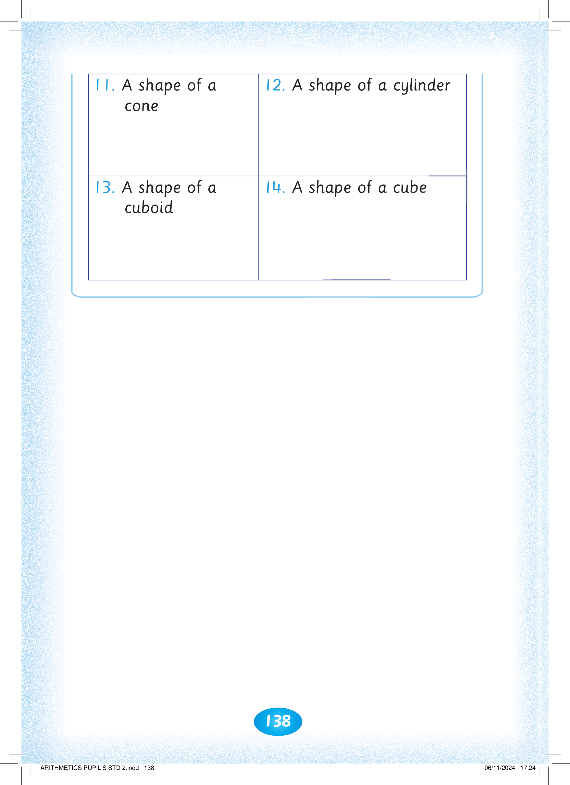
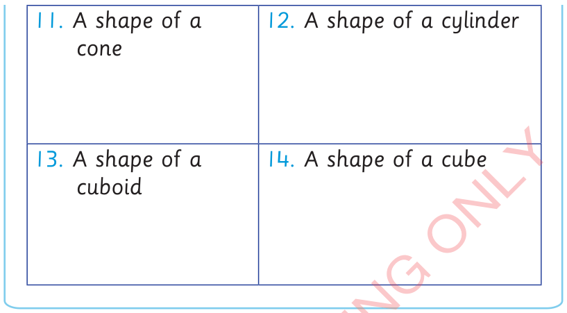

138


Exercise 7 continues. 11. A shape of a cone. 12. A shape of a cylinder. 13. A shape of a cuboid. 14. A shape of a cube.
12. A shape of a cylinder
13. A shape of a cuboid
14. A shape of a cube



ARITHMETICS PUPIL'S STD 2.indd 138
06/11/2024 17:24